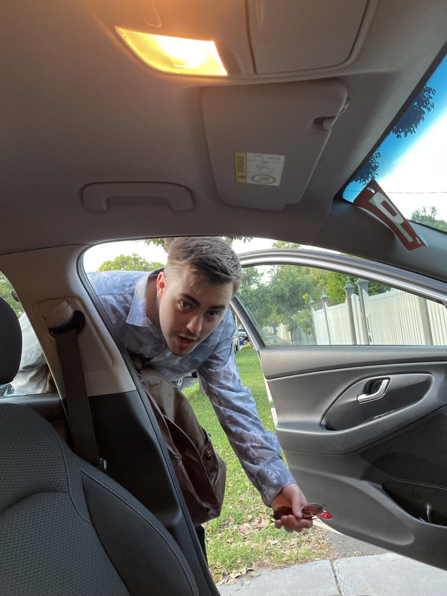

DiabetesM
About Us
DiabetesM
World class diabetes monitoring.Contact Us
Do you have any burning inquiries regarding our services at DiabetesM?
You can contact us via:
support@diabetesm.com.au
+ 0499 999 999
What is DiabetesM?
“DiabetesM” is a diabetes management and monitoring platform developed by a team of students from the University of Melbourne.
Through this app, we offer various features and services that will assist you through diabetes.
What we offer:
For patients
- Easy to use tracking and recording service for a range of different measures
- Customisable health tracing
- Correspondence between you and your clinician
For clinicians
- A user experience and speed focused UI designed for optimizing your efficiency in fulfilling tasks
- A private communication channel between you and your patient
- A colour-effective UI designed to highlight patient data needing immediate attention
For all
- Powerful presentation of data for pattern finding and effective management
- The ability to switch between light and dark mode
- Secure and encrypted data storage
To start using our services, you can Create an Account, or if you already have one, you can Log in here.
Alternatively, to read more about diabetes, see our About Diabetes page.
Meet the Team
